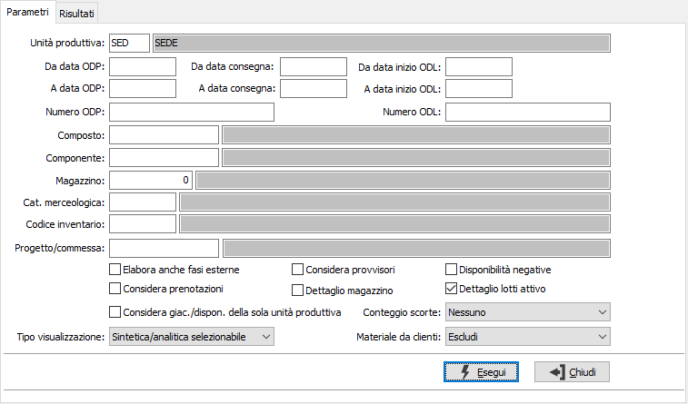
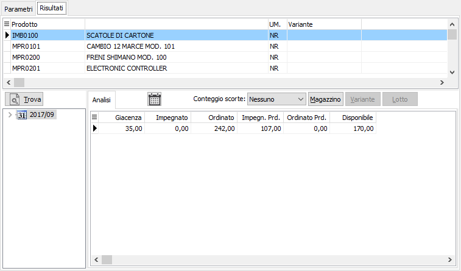

è possibile ottenere la
visualizzazione della disponibilità in forma grafica (vista ad albero
analitica) oppure in forma di elenco (vista in griglia sintetica).
è possibile ottenere la
visualizzazione della disponibilità in forma grafica (vista ad albero
analitica) oppure in forma di elenco (vista in griglia sintetica).Analisi disponibilità componenti
Il programma consente di analizzare la disponibilità nel tempo di uno specifico componente oppure dei componenti di uno specifico ODL o di uno specifico ODP, tenendo in considerazione anche gli ODP provvisori.

Nei parametri di selezione è necessario impostare l'unità produttiva, che se unica e configurata sarà proposta in automatico, è possibile impostare il singolo composto per cui analizzare i componenti oppure un singolo componente, il magazzino, se considerare le prenotazioni ed anche i progressivi provvisori risultato della generazione del piano di produzione; è inoltre possibile elaborare anche le fasi esterne spuntando l'apposita casella; è inoltre possibile preimpostare la visualizzazione e la stampa del conteggio scorte e del dettaglio dei magazzini agendo sui relativi campi; se non impostati sarà comunque possibile, nell'analisi a video, impostarli per singolo prodotto, ma tali modifiche non si rifletteranno sulla stampa. è inoltre possibile analizzare le sole disponibilità negative spuntando la relativa casella; se attiva la gestione dei lotti sarà possibile attivare la visualizzazione per lotto spuntando la casella "Dettaglio lotti attivo". Il parametro "Considera giac./dispon. della sola unità produttiva" se spuntato indica che il calcolo della giacenza/disponibilità dei prodotti sarà effettuato solo relativamente ai magazzini assegnati all'unità produttiva. Il parametro relativo al Tipo visualizzazione prevede tre casi: sintetica/analitica selezionabile direttamente, solo sintetica, solo analitica. Se attivo il modulo del conto lavoro attivo è possibile escludere i materiali forniti dai clienti, includerli oppure mostrare solo i materiali forniti dai clienti.

Una volta impostati i criteri di selezione viene presentato l’elenco degli articoli: per ognuno viene visualizzata la giacenza alla data corrente e le disponibilità nel tempo; è possibile ottenere facilmente il dettaglio per magazzino e se l’articolo gestisce varianti, lotti e ubicazioni anche il dettaglio in base agli elementi selezionati e il conteggio o meno delle scorte, se previsto sul prodotto.
Dalla pagina Risultati, tramite i pulsanti presenti nella Toolbar sarà possibile effettuare la stampa.
Tramite il bottone è possibile ottenere la
visualizzazione della disponibilità in forma grafica (vista ad albero
analitica) oppure in forma di elenco (vista in griglia sintetica).
Sulla visualizzazione in forma grafica, sulla vista ad albero, tramite il tasto destro del mouse viene aperto il menù dal quale è possibile espandere o comprimere tutti i dettagli delle settimane e dei giorni.
Tramite il doppio click sulle colonne di impegnato e di ordinato, anche in produzione, viene visualizzato il dettaglio degli elementi che compongono il valore di sintesi.